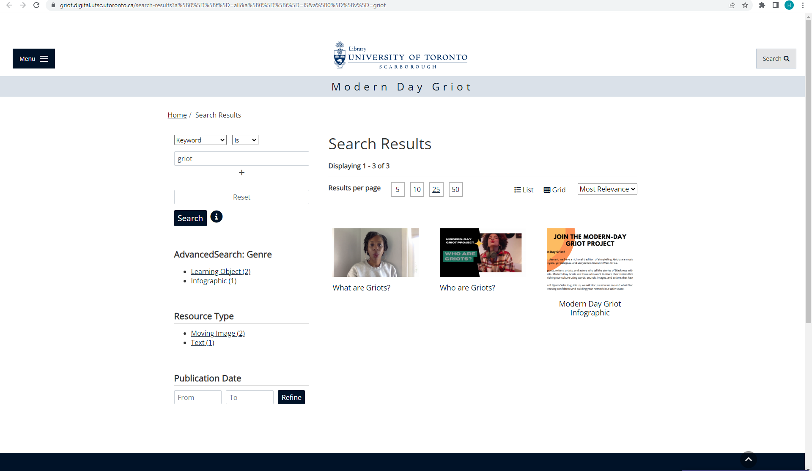
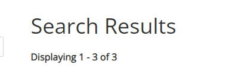
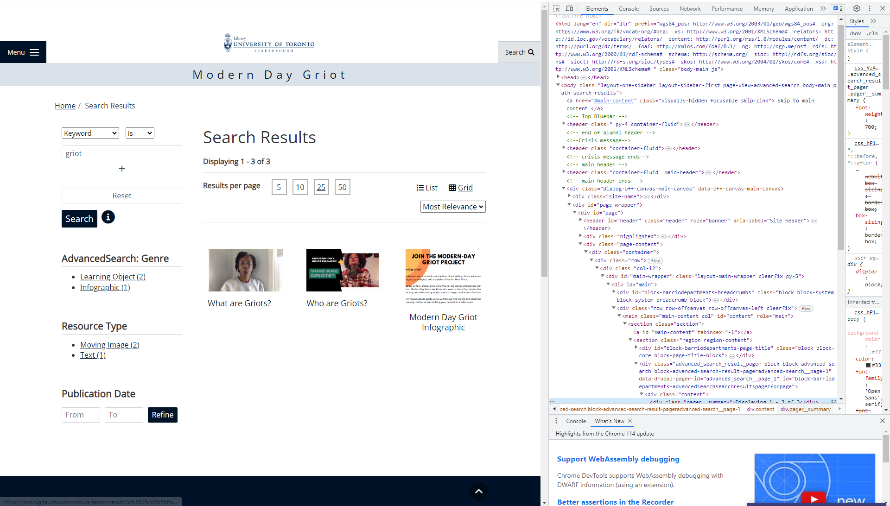
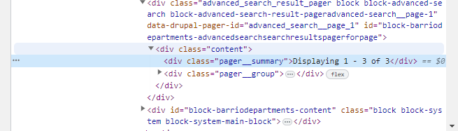

Contributing to SiteWatch
SiteWatch is an open-source tool, and we welcome contributions from the community. This document outlines the process for contributing to SiteWatch.
The SiteWatch Structure
SiteWatch is written in Python for readability and portability. The code structrue is as follows
The sitewatch file
This file is the entry point for the application. It contains the logic for greeting and parsing command line arguments, verifying the config and CSV files, and looping over each test and initiating it. It also contains the logic for writing the results to the output file and initiating the email process. This file is the only file that should be run directly, and it has been setup to be an executable file. As this file is relatively short (all other logic is packed into other files), it shouldn't need to be modified often.
The utils Directory
This directory contains various useful files with many utility functions. The config_utils.py module contains the logic for reading the config file and verifying that it is valid. The csv_utils.py module contains the logic for reading the CSV file and verifying that it is valid. The email_utils.py module contains the logic for sending emails. The documentation for the functions contained in these files is contained in the docstrings of the functions themselves, which makes it easy to use if you are editing the code in an IDE.
The test_suites Directory
This directory contains logic for running tests. The main file to make note of here is test_controller.py, as this is the module which contains the TestController class, which can run tests given the name of the test and a CSV row.
The pages Directory
This directory contains logic for interacting with web pages. The main file to make note of here is page.py, as this is the module which contains the BasePage class, which is the base class for all pages (and it contains several useful functions applicable to all pages). When a page module is added to this directory, it should contain logic that is specific to that page. For example, the collection_page.py contains several functions that interact with viewers, which are specific to the collection page.
Adding a New Test
To better illustrate the process of adding a new test, we will walk through the process of adding a test. Specifically, let's test the number of results when accessing a search page or a collections page. For example, on this page, there are 3 results, and on this page, there are 23591 results. We want to design a test that compares the number of results on the page to the expected number of results that the user specifies in the CSV file, and fails if the numbers do not match.
There are several steps involved in adding a new test:
* Find an appropriate element to test
* Decide if you need a new page module and create one if necessary (must inherit from BasePage)
* In the page class you are testing, create logic to interact with the element you are testing
* Decide if you need a new test suite and create one if necessary (must inherit from Test)
* In the test suite, create a new test function with assert statements
* Add the test to the test_controller.py file
* Whitelist the test in the CSV checks
Find an Appropriate Element to Test
Let's consider the first page above. Here is a screenshot of the page

We want to confirm that there are 3 results on the page. First, ask yourself: "How would I, as a human, confirm that there are 3 results on the page?" You would probably look for something that says the total number of results. Indeed, find the element we are looking for

If we can get to the "3" part, then we'll know how many results we have.
We now use the Chrome DevTools to inspect this element and find something (like a class name, ID, XPath, or CSS selector) that we can use to identify this element, so that we can search for it in our code. To do this, right click on the element and click "Inspect".

This will open the DevTools and highlight the element we are looking for in blue.
 
This is indeed the element we are looking for since it clearly says "Displaying 1 - 3 of 3". Now, we need to find something that we can use to identify this element. Typically, the following order for choosing what to identify the element by should be selected as follows:
* ID
* Class Name (if it is unique)
* XPath
* CSS Selector
We can see that the element has a class name of pager__summary, and this is unique to this element, so we will use this to identify the element. That's all we need from the webpage! We can close the entire browser if we want now.
Decide if You Need a New Page Module and Create One if Necessary
At the time of writing, the only module in the page directory is page.py, and as that module contains logic for interacting with a general page, and this test pertains only to search and collections pages, we'll make a new module collections_or_advanced_search_page.py.
In the Page Class You Are Testing, Create Logic to Interact with the Element You Are Testing
We'll cut to the chase and show the code we wrote straight away, and then explain it.
from pages.page import BasePage
from selenium.common.exceptions import NoSuchElementException
from selenium.webdriver.common.by import By
from typing import Optional
class CollectionsOrAdvancedSearchPage(BasePage):
def get_collection_count(self) -> Optional[int]:
"""Return the number of collections on the collections page."""
self.driver.get(self.url)
try:
pager_summary = self.driver.find_element(By.CLASS_NAME, "pager__summary")
return int(pager_summary.text.split(" ")[-1])
except NoSuchElementException:
return None
As you can see, we have a class called CollectionsOrAdvancedSearchPage that inherits from BasePage. We have a function called get_collection_count that returns the number of collections on the page. This function does the following:
* Navigates to the page
* Finds the element we are looking for
* Gets the text of the element
* Splits the text by spaces
* Gets the last element of the list (which is the number of collections)
* Converts the number of collections to an integer
* Returns the number of collections
How does the function know which page to navigate to? The BasePage class has a constructor that takes in a URL (along with other parameters), and the get_collection_count function uses this URL to navigate to the page. See the BasePage class for more details.
Decide if You Need a New Test Suite and Create One if Necessary
At the time of writing, the only module in the test_suites directory is test.py, and as that module contains only the abstract Test class, we'll make a new module collection_count_test.py.
In the Test Suite, Create a New Test Function with Assert Statements
We'll cut to the chase and show the code we wrote straight away, and then explain it.
from pages.collections_or_advanced_search_page import CollectionsOrAdvancedSearchPage
from test_suites.test import Test
from selenium.common.exceptions import NoSuchElementException
class CollectionCountTest(Test):
""" A test to check that the number of collections on the collections page is correct. """
def run(self, url: str, expected_value: str) -> None:
""" Run the test on the page at <url> and compare the result to <expected_value>."""
try:
expected_value = int(expected_value)
except ValueError:
raise ValueError(f"Expected value must be an integer, but got {expected_value}.")
collection_page = CollectionsOrAdvancedSearchPage(self.driver, url)
try:
actual_value = int(collection_page.get_collection_count())
except NoSuchElementException:
raise NoSuchElementException(f"Could not find the collections count on {url}.")
assert actual_value == expected_value, f"Expected {expected_value}, but got {actual_value}."
As you can see, we have a class called CollectionCountTest that inherits from Test. We have a function called run that runs the test. This function does the following:
* Tries to convert the expected value to an integer
* Creates a CollectionsOrAdvancedSearchPage object
* Tries to get the number of collections on the page
* Asserts that the actual value is equal to the expected value
Add the Test to the test_controller.py File
This itself contains multiple steps:
* Import the test suite
* Make an attribute for the TestController that points to an instance of your new test suite
* Make a function that runs your test suite
* Add your test to the TestController's run_test function
We'll first import test suite:
from test_suites.collection_count_test import CollectionCountTest
Then, we'll add the following line to the bottom of the initializer of the TestController class:
self.collection_count_test = CollectionCountTest(self.driver)
So now the initializer looks like this:
class TestController():
def __init__(self):
options = webdriver.ChromeOptions()
options.add_argument("--headless")
self.driver.implicitly_wait(20)
self.driver = webdriver.Chrome(options=options)
self.collection_count_test = CollectionCountTest(self.driver)
Then, we'll make a function that runs the test suite:
def run_collection_count_test(self, csv_row: dict, csv_row_number: int) -> bool:
""" Runs a Collection Count Test. """
try:
self.collection_count_test.run(csv_row["url"], csv_row["test_input"])
except ValueError:
print(Fore.RED, f"Invalid test input on row {csv_row_number + 1}. Please see log for more details.")
logging.error(f"Invalid test input on row {csv_row_number + 1}. The test input must be an integer.")
return False
except AssertionError as e:
# Get the assertion error message
error_message = str(e)
print(Fore.RED, f"Collection Count Test failed on row {csv_row_number + 1}. Please see log for more details.")
logging.error(f"Collection Count Test failed on row {csv_row_number + 1}. The expected number of collections was not found. {error_message}")
return False
except Exception as e:
print(Fore.RED, f"Collection Count Test failed on row {csv_row_number + 1}. Please see log for more details.")
logging.error(f"Collection Count Test failed on row {csv_row_number + 1}. {e}")
return False
else:
print(Fore.GREEN, f"Collection Count Test passed on row {csv_row_number + 1}.")
logging.info(f"Collection Count Test passed on row {csv_row_number + 1}.")
return True
We must make sure that under no circumstances does the test suite crash, so we have a try-except block that catches all exceptions. If the test passes, we print a green message to the console and log a message to the log file. If the test fails, we print a red message to the console and log a message to the log file.
Finally, we'll add the following line to the run_test function:
if test_type == 'collection_count_test':
test_result = self.run_collection_count_test(csv_row, csv_row_number)
Whitelist the Test in the CSV Checks
Go to csv_utils.py and find the check_data function. There will be a variable supported_test_types that contains a list of all the test types that are supported. Add your test type to this list. We'll just add a new element `collection_count_test' to the list.
And that's it! You've added a new test to the test suite. Now, you can run the test suite and see if it works. If it doesn't, you can debug it and fix it.